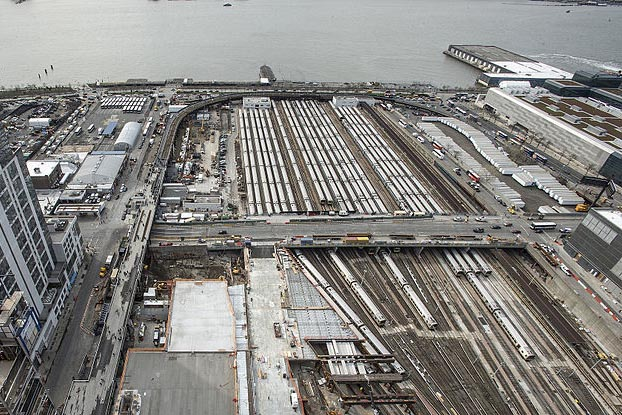

The area known as Hudson Yards encompasses 360 acres on the Far West Side of Manhattan. Hudson Yards is roughly defined by West 28th Street to the south, Seventh and Eighth Avenues to the east, West 43rd Street to the north, and the Hudson River to the west.
For decades, Hudson Yards elicited the attention of previous government officials and developers as it remained underdeveloped compared to neighboring communities. In 1969, the Lindsay administration put forward a plan to expand Manhattan’s commercial business district to the Hudson River. In 1994, the Giuliani administration planned to bring the Yankees and the 2008 Olympics to a proposed stadium on the West Side. However, the area’s redevelopment remained elusive until the Bloomberg Administration’s proposal to rezone the area for mixed-use development linked to the city’s (failed) bid to host the 2012 Olympics.
The Bloomberg Administration argued that Hudson Yards needed to be redeveloped as an office district to protect and increase the city’s share of the regional market for commercial space. This assertion was supported by a 2003 study by consultants Economics Research Associates and Cushman & Wakefield showing Midtown’s share of occupied office space was decreasing despite increasing demand in the New York region (Economics Research Associates and Cushman & Wakefield 2003). The cause was cited as insufficient office development space. Hudson Yards' proximity to Midtown offered the opportunity to capture growth in the office market by extending the historic appeal of the city’s premier business center west (Cushman & Wakefield 2006).